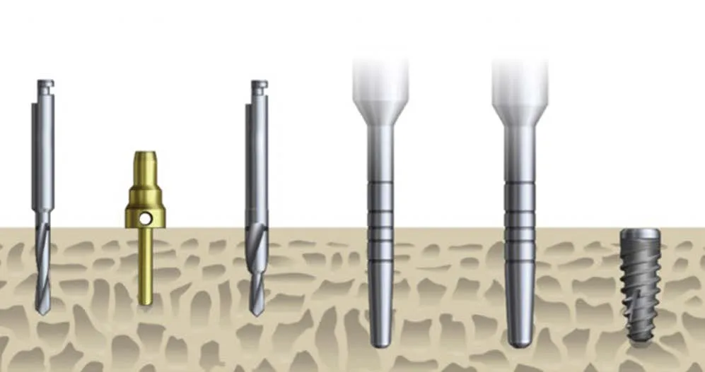
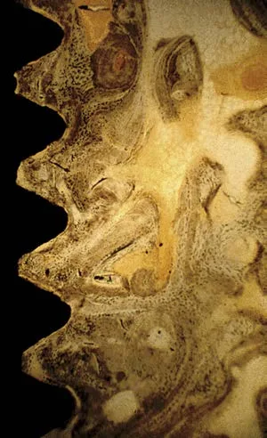

نسخه استخراجشده؛ ترجمه یا تأیید علمی انجام نشده است. وضعیت: captured
پروتکل جراحی تکمرحلهای وقتی اندیکاسیون دارد که کاشت ایمپلنت با ثبات اولیهی عالی همراه باشد. این جمله ساده است ولی تمام تصمیم مرحلهبندی را در خود دارد.
در نخستین پروتکل کلاسیک، ایمپلنتها زیر بافت دفن میشدند و ۴ تا ۶ ماه برای اینتگره شدن رها میشدند، سپس جراحی دومی برای اکسپوز و قرار دادن اباتمنت هیلینگ انجام میشد — تکنیک دو مرحلهای.
امروز، اگر ثبات اولیه عالی باشد، میتوان اباتمنت هیلینگ را همان جلسه قرار داد و ایمپلنت را بالای بافت نرم ترمیم کرد — یعنی حذف جراحی مرحلهی دوم.
ولی به منطق تصمیم دقت کن: این انتخاب پاداش ثبات اولیه است، نه یک ترجیح. اگر پایداری کافی نباشد، تکمرحلهای بودن یعنی قرار دادن ایمپلنتی متحرک در معرض محیط دهان — و از ماژول اول میدانی که حرکت میکروسکوپی در دورهی ترمیم به فیبرواینتگریشن میانجامد.
دو شرط دیگر هم هست: بیمار عادت پارافانکشنال (مثل بروکسیسم) نداشته باشد و همزمان با کاشت پیوند استخوان انجام نشده باشد. در این موارد، و هر وقت ثبات اولیه محل تردید است، دفن ایمپلنت (دو مرحلهای) ایمنتر است.
و ابزار سنجش: تورک درج و آنالیز فرکانس رزونانس (RFA) دو روش عینی و عددی سنجش ثبات اولیهاند؛ تورک درج پایینتر با شکست بیشتر همراه است.

ثبات اولیه اتفاقی نیست — محصول تصمیمهای توست. سه اهرم اصلی:
۱. قطر آمادهسازی نسبت به قطر ایمپلنت. در استخوان نرم، کوچکتر گرفتن متهها از قطر ایمپلنت یکی از روشهای شناختهشدهی افزایش تراکم و تثبیت است. در همین راستا، استئودنسیفیکیشن استخوان را حفظ و متراکم میکند.
۲. استفاده یا عدم استفاده از تپ. در D1 تپ لازم است تا ایمپلنت آسیب نبیند؛ در D3 تپ هرگز اندیکاسیون ندارد چون فشردگی ناشی از خود ایمپلنت همان کار را میکند. یعنی یک ابزار واحد، در دو تراکم دو معنای متضاد دارد.
۳. درگیر کردن کورتیکال. در D2، وقتی استخوان کورتیکال بخشهای جانبی و لینگوال ایمپلنت را درگیر میکند، BIC حدود ۷۰ درصد میشود. و همینجا اهمیت آن «دست محکم» روشن میشود: اگر ایمپلنت به سمت فاسیال رانده شود، از صفحهی کورتیکال ضخیمتر لینگوال دور میشود و همان پشتیبانی را از دست میدهد.
ابزار کاشت. قرار دادن ایمپلنت با هندپیس معمولاً در D2، D3 و D4 اندیکاسیون دارد. در استخوان باکیفیتتر — بهویژه D1 — ورود ایمپلنت میتواند دشوار شود؛ پس در D1 ایمپلنت با راچت دستی درج میشود که کنترل و حس مقاومت بهتری میدهد و چرخدندههای هندپیس را هم از آسیب دور نگه میدارد.
جمعبندی: ثبات اولیه خروجی تطبیق پروتکل با تراکم است. و همان مطالعهی چندمرکزی نشان داد وقتی این تطبیق انجام شود، بقای جراحی در هر چهار تراکم بالای ۹۸ درصد است.

نوع سؤال: ساخت کلمه · 5 خانه
حروف منبع: ت · ب · ت · ث · ی